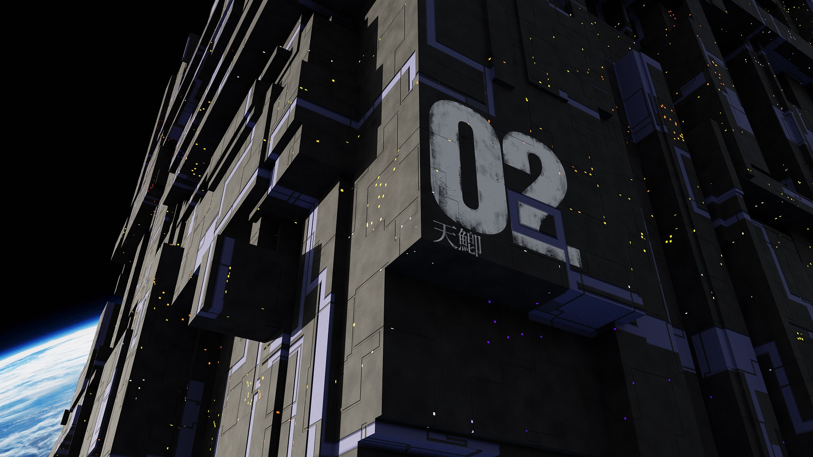

AI-powered orbital systems enabling autonomous, real-time analytics and deep space mission intelligence.
OrbitalX develops advanced artificial intelligence designed for orbital infrastructure, satellites, and deep-space exploration. Our mission is to create resilient, adaptive systems capable of operating independently in extraterrestrial environments.

AI guidance systems optimizing orbital trajectories without ground intervention.
Real-time predictive analytics for spacecraft diagnostics and safety.
Self-adaptive mission architecture for extreme extraterrestrial environments.
Machine-learning control architectures enabling autonomous course adjustment.
High-efficiency orbital data processing for mission-critical analytics.
Decentralized communication across orbital infrastructures.
Smart thrust optimization systems for fuel-efficient missions.
Initial AI flight system prototypes for low Earth orbit testing.
Deployment of AI systems on test satellites for real-world validation.
Testing adaptive systems in lunar orbit and deep space environments.
Full-scale deployment of OrbitalX technology for commercial space missions.